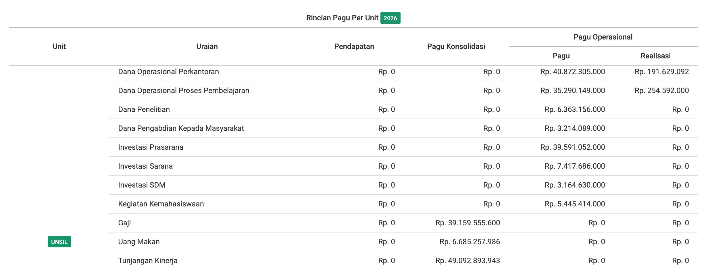

Budget Breakdown by Unit
Here's an interesting fact..
Learning from last year’s university accreditation experience, in the finance section we faced difficulties in identifying the amount of budget allocated per category as required by the assessors.
There are two main parts: sources of funds and use of funds.
Sources of funds include all income received by the university from students (UKT, IPI, KIP-K), ministries, revenue from state property, cooperations, research and other sources.
Use of funds refers to all expenditures made according to the work plan stated in the current year’s DIPA (Budget Implementation List).
The categories include: Office Operational Funds, Learning Process Operational Funds, Research Funds, Community Service Funds, Infrastructure Investment,
Facilities Investment, Human Resource Investment, and Student Activities.
In general, SIPAUS doesn't have a feature to classify activities into these categories, so we have to process the data manually.
This becomes even more complicated when faculties or study programs are preparing for accreditation and need the same type of data.
So the soluction is..
I created a budget allocation breakdown per unit based on two categories: static and dynamic. The dynamic category is based on budget
classifications selected by each user in the RAB sub-component, while the static category refers to consolidated budgets allocated under the BKU / Sarana Prasarana unit,
but used by individual units.
The usage data for the static category is obtained from Excel files processed using PhpSpreadsheet. Even though the data is handled manually,
it can still be identified per work unit, because the data appears after payments are made in the current year.
Examples include salaries, meal allowances, performance allowances, and lecturer professional allowances. Although the budget is allocated
under the BKU unit, its usage is actually for each respective unit.
For other consolidated budgets besides personnel expenses (such as salaries, meal allowances, performance allowances,
and lecturer professional allowances), the data comes from the Facilities and Infrastructure Unit. The accountability and
implementation are handled by the Rectorate, but the beneficiaries remain the individual units.
The following section presents the detailed breakdown of the dynamic and static categories:
| Consolidated Budget (Static) | Operational Budget (Dynamic) | Revenue (Static) |
|---|---|---|
| Salary | Office Operational Funds | Tuition Fee (UKT) |
| Meal Allowance | Teaching and Learning Operational Funds | IPI |
| Performance Allowance | Research Funds | KIPK |
| Lecturer Professional Allowance | Community Service Funds | |
| Facilities Investment | Infrastructure Investment | |
| Infrastructure Investment | Facilities Investment | |
| Human Resources Investment | ||
| Student Activities |

The realization data above is taken from the realization table and summed up by the UNSIL unit based on operational budget categories for all units.
Quick Recap:
By displaying the budget breakdown per unit in this statistics section, users can directly
see the budget by the categories needed for accreditation without having to process the
data manually. Even if manual processing is still required, it is far less complicated than
before, since the budget breakdown per unit is already available.
With this feature, it is expected to help improve data transparency for all unit leaders and the public.